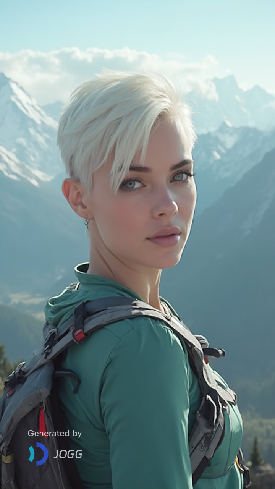
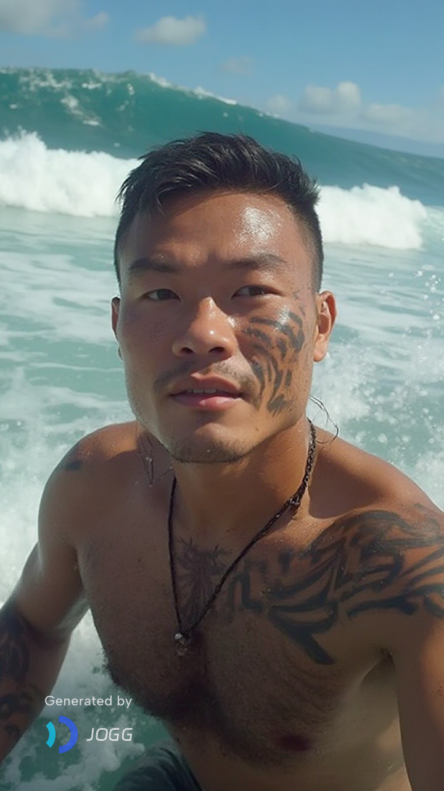
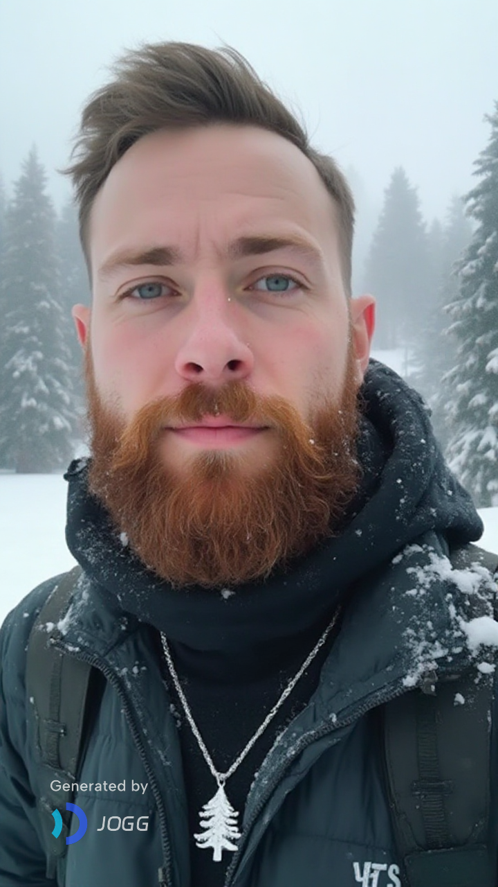
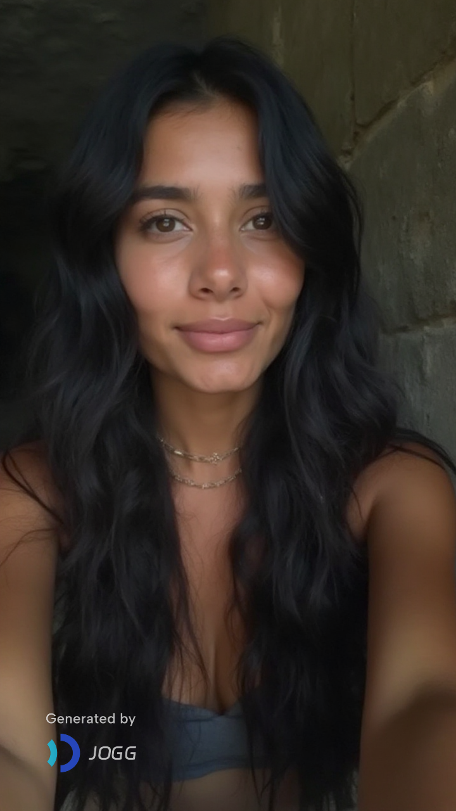
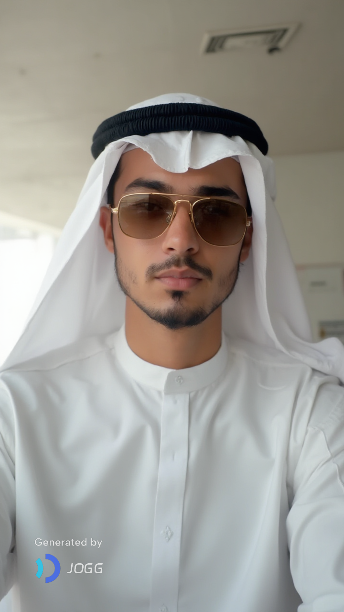
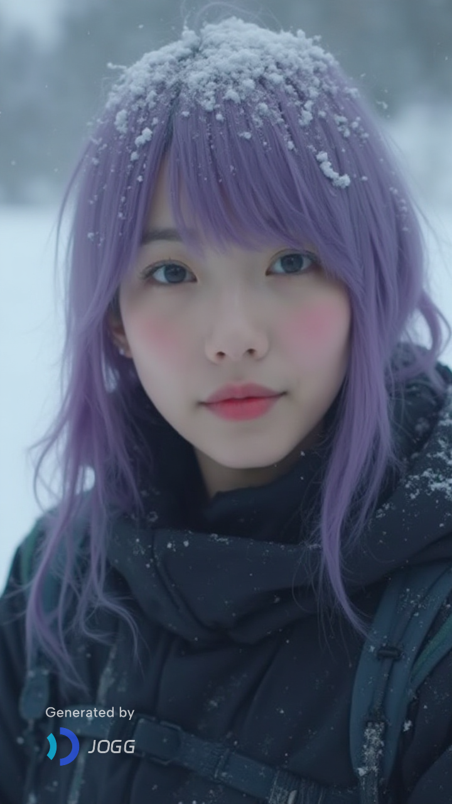
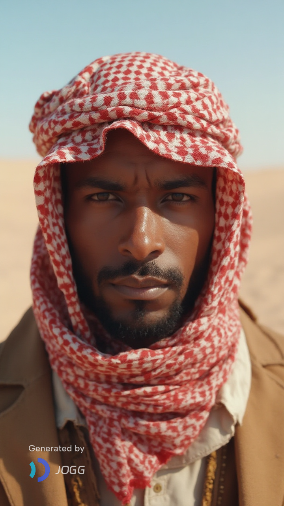
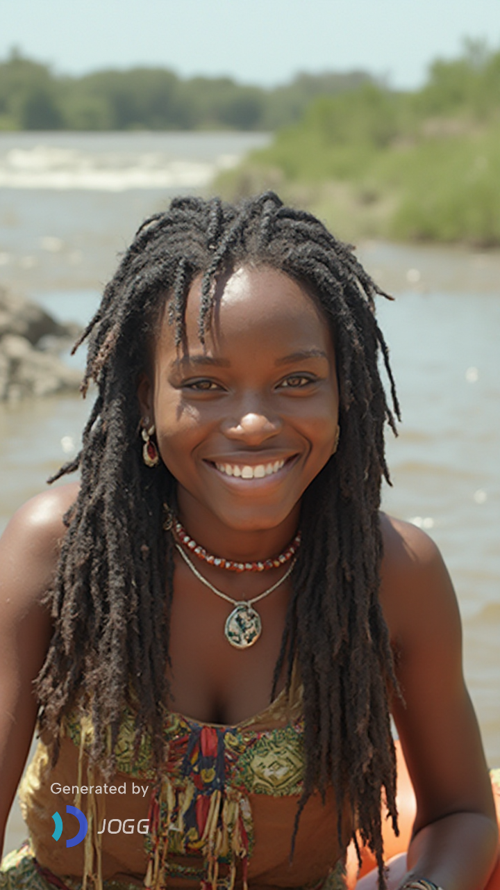
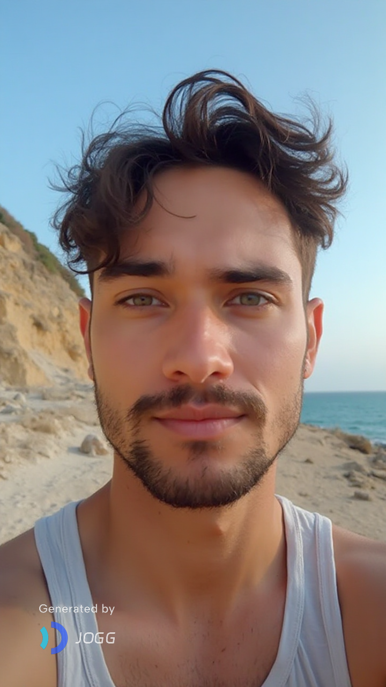

Aula 4: Base de Dados dos Desportos Radicais
Objetivo
Criar uma lista estruturada com os dados dos desportos radicais.
Explicação
Vamos criar uma lista com os desportos radicais dos 10 amigos milionários. Esta lista contém várias linhas que vão registar o desporto e o equipamento que é necessário comprar para o praticar e cada coluna identifica o tipo de dado que vai guardar (nome do desporto, equipamento, preço mais caro).
Base de Dados
| Nome do Desporto | Equipamento | Preço Mais Caro |
|---|---|---|
| Wingsuit Flying | Wingsuit | €2.500,00 |
| Wingsuit Flying | Paraquedas Principal | €7.000,00 |
| Big Wave Surf | Prancha de Big Wave (gun) | €3.000,00 |
| Big Wave Surf | Roupa de Isolamento Térmico | €1.500,00 |
Atividade
- Vai assumir o papel do amigo milionário que vai tentar convencer os outros a irem praticar o seu desporto.
- Pesquise sobre o Desporto Radical indicado na tabela abaixo.
- Os pontos a pesquisar são:
- O que é o [Desporto Radical].
- Imagens do [Desporto Radical].
- Equipamento que é necessário para praticar o [Desporto Radical] e preço do equipamento mais caro.
- Um vídeo sobre o [Desporto Radical].
- Crie uma apresentação sobre o [Desporto Radical] seguindo os passos da seção seguinte.
- Aceda ao LMArena.ai
- Escreva o seguinte prompt para ajudar no desenvolvimento da apresentação:
- Crie uma apresentação em branco no PowerPoint Online.
- Construa a apresentação que considerou melhor no LMArena.
- Aceda ao Microsoft Designer (https://designer.microsoft.com/)
- Selecione a opção "Imagens".
- Escreva o seguinte prompt para ajudar no desenvolvimento da capa da apresentação:
- Edite a imagem criada pela AI e modifique-o ao seu gosto e depois faça o download para inseri-la na apresentação.
- A apresentação final deve ter a estrutura semelhante ao da imagem a seguir:
- Guarde a apresentação no Onedrive com o nome "[Desporto Radical]".
| Grupo | Desporto Radical | Amigo |
|---|---|---|
| 1 | Wingsuit Flying | Chloe  |
| 2 | Big Wave Surf | Tane  |
| 3 | Big Mountain Skiing | Jaques  |
| 4 | Espeleologia Vertical | Ana  |
| 5 | Pilotagem de Supercarros | Khalid  |
| 6 | Ice Climbing | Yuki  |
| 7 | Sand Boarding | Amir  |
| 8 | Rafting | Naledi  |
| 9 | Alpinismo | Klaus |
| 10 | Cliff Diving | João  |
Passos
| Assuma o papel de um aluno do 11º ano e desenvolva uma apresentação para o PowerPoint que apresente o seguinte Desporto Radical: [Desporto Radical]. A apresentação deverá ter 8 diapositivos. O 1º será a capa, o 2º explica o que é o desporto, o 3º explica como se pratica, o 4º mostra imagens sobre o desporto, o 5º indica qual é o equipamento necessário para o praticar e o preço mais caro do equipamento, o 6º indicará um link para o vídeo mais visto desse desporto, o 7º mostra a tua opinião porque esse deve ser o desporto que todos os amigos devem experimentar praticar e o 8º indica as fontes de consulta que foram utilizadas para construir o trabalho. |
| Desenvolva um retrato de um desportista que pratica [Desporto Radical] equipado com [Equipamento do Desporto Radical], [Praticando o Desporto Radical] no [Ambiente do Desporto Radical]. |

Próxima Aula
Todos os grupos vão ser chamados para apresentar o seu Desporto Radical.